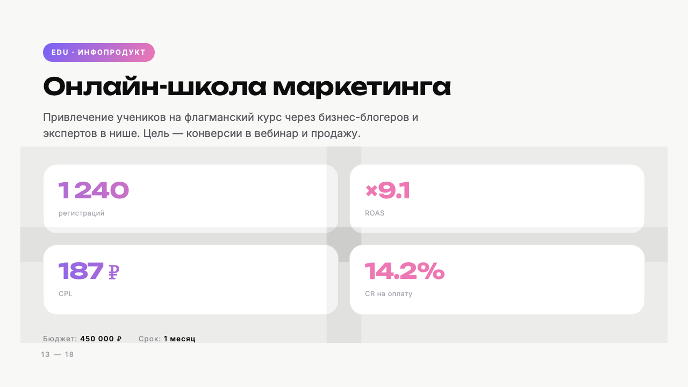
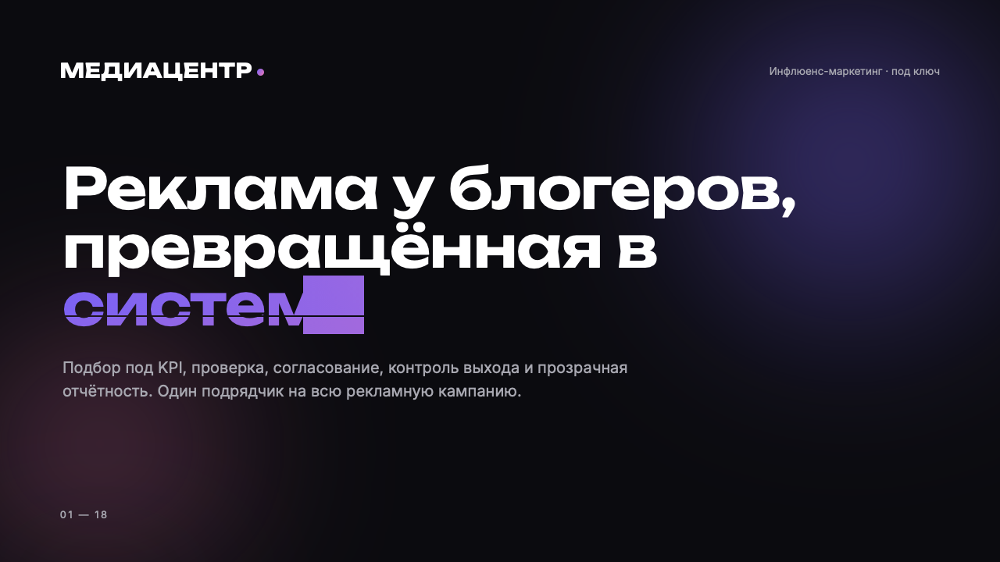
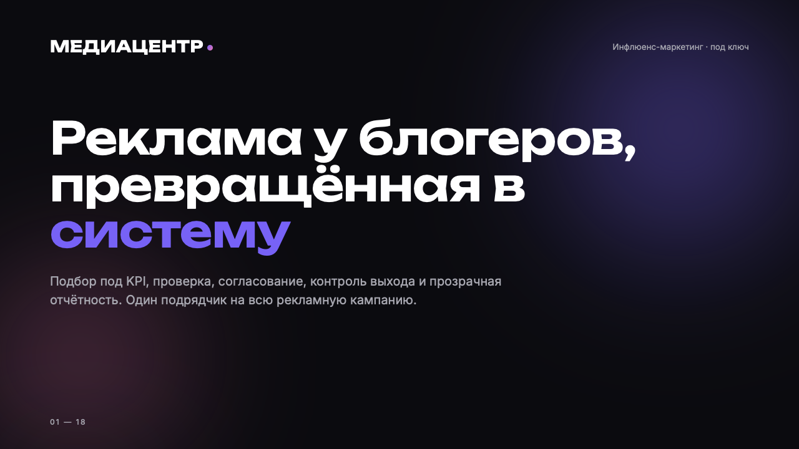
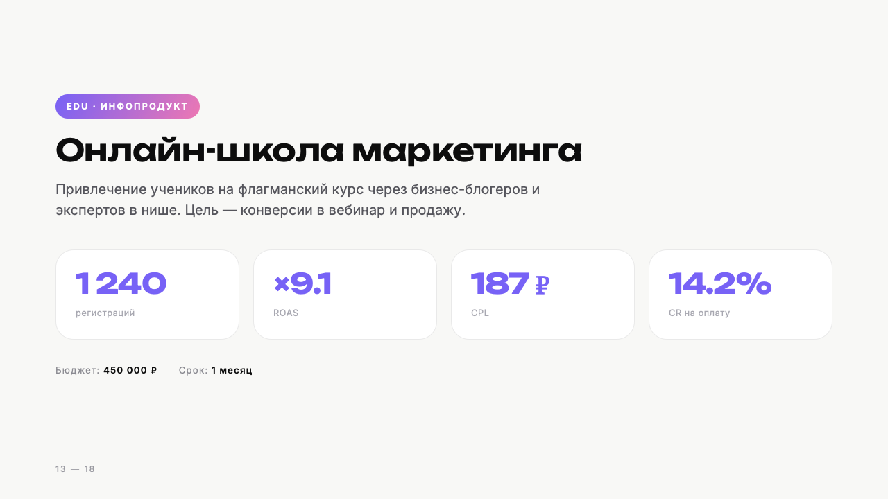
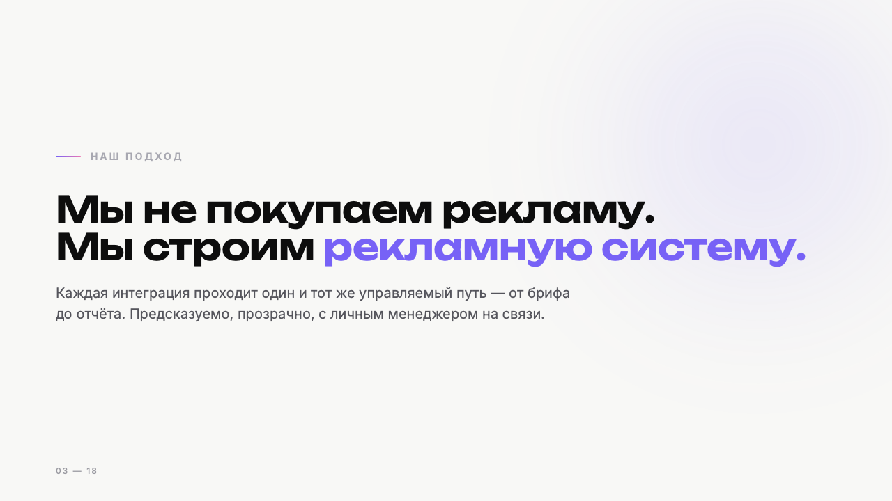

Почему PDF ломался ровно на 7 слайдах из 18 — и не чинился
Презентацию агентства «Медиацентр» правили несколько раз подряд: номер слайда «наезжал» на контент на слайдах 6, 8–13, а после починки та же проблема возвращалась при следующем экспорте. Разбор показал: дело не в вёрстке конкретных слайдов, а в одном непросуженном media-запросе, который делал экспорт непредсказуемым. Ниже — как это нашли и закрыли на уровне архитектуры.
Симптом был на поверхности. Причина — нет
Презентацию редактировали и переэкспортировали много раз. Каждый раз номер страницы «съезжал» на одних и тех же слайдах — 6, 8, 9, 10, 11, 12, 13 — а вручную подвинутый текст снова расходился при следующей правке контента.

Нумерация наезжает на контент
Плотные grid-сетки (4 колонки метрик, 7 колонок процесса) на этих слайдах схлопывались в 2 колонки, контент вырастал по высоте и упирался в подпись «13 — 18» внизу страницы.

Градиентный текст обрезан
Найден отдельно, по скриншотам с Mac: заголовок с градиентной заливкой текста рендерился нормально в браузере, но в PDF-просмотрщике macOS обрывался цветным прямоугольником на середине слова.
Искали не «где криво», а «что общего»
Точечная правка каждого слайда ничего не давала — проблема возвращалась после следующего изменения текста. Значит, источник был не в контенте, а в общем правиле вёрстки.
Изучил структуру проекта
Один index.html на 18 слайдов, общий styles.css, три альтернативных сценария экспорта в PDF: headless Chrome, Playwright (export.py), Puppeteer (export_node.js). Общий стиль — источник истины для всех способов.
Сопоставил список «сломанных» слайдов с версткой
Все проблемные слайды — те, где вёрстка держится на плотных сетках: .process на 7 колонок, .case-metrics на 4 колонки, .facts на 2×3. Совпадение не случайное — это единственное, что их объединяет.
Нашёл общий знаменатель в media-запросах
Мобильные брейкпоинты @media (max-width:1024px) и (max-width:680px) не были ограничены типом устройства. Они одинаково активны и в узком окне браузера, и при экспорте в PDF — как только «бумага» уже 1024 CSS-пикселей.
Подтвердил гипотезу экспериментом
Экспорт через диалог печати браузера (⌘P) даёт предпросмотр уже узкого «листа». Сетки схлопываются в 2 колонки → контент вырастает по высоте → упирается в колонтитул. Поэтому проблема была не «случайной», а воспроизводилась каждый раз именно на одних и тех же слайдах.
Один и тот же почерк — разный механизм
Скриншоты с Mac показали второй дефект, не связанный с первым: градиентная заливка текста (background-clip:text) корректно отображалась в браузере, но обрывалась в macOS Preview.
box-shadow карточек Preview рисовал серыми плашками поверх светлых слайдов.Правка архитектуры, а не отдельных слайдов
Каждое изменение — общее правило в styles.css, а не координаты конкретного текста. Это гарантирует, что баг не вернётся после следующей правки контента.
@media screen and (max-width:…) — при печати/экспорте эти правила больше не могут сработать ни при какой ширине «бумаги».position:absolute;left:80px;bottom:34px вместо величин в vw, зависевших от ширины окна.margin:auto вместо центрирования по flex — если контент когда-нибудь станет выше страницы, он прижмётся к верху, а не наедет на футер.export.sh на headless Chrome вместо диалога печати браузера — тот самый источник нестабильной ширины «бумаги».Не «выглядит нормально», а измерено
Глазами один и тот же слайд на экране может выглядеть одинаково в разных читалках PDF. Поэтому проверка — не визуальная оценка, а два независимых числовых теста.
sips) — движок, которым сама macOS показывает PDF, а не приближение через сторонний рендерер.$ python3 verify_marks.py
страниц: 18
размеры страниц: {(960.0, 540.0)}
Y-координата номера на всех страницах: {29.17}
✓ OK — единственное значение на 18 из 18
Что изменилось для агентства



Из чего собран проект
Презентация — статичные HTML/CSS/JS без сборки и фреймворков: 18 секций на одной странице, скролл-снап, IntersectionObserver для анимаций появления. Экспорт в PDF — headless-браузер, печатная медиа-таблица управляет вёрсткой страницы.
Реклама у блогеров, превращённая в систему
Подбор под KPI, проверка, согласование, контроль выхода и прозрачная отчётность — агентство инфлюенс-маркетинга, для которого готовилась эта презентация.